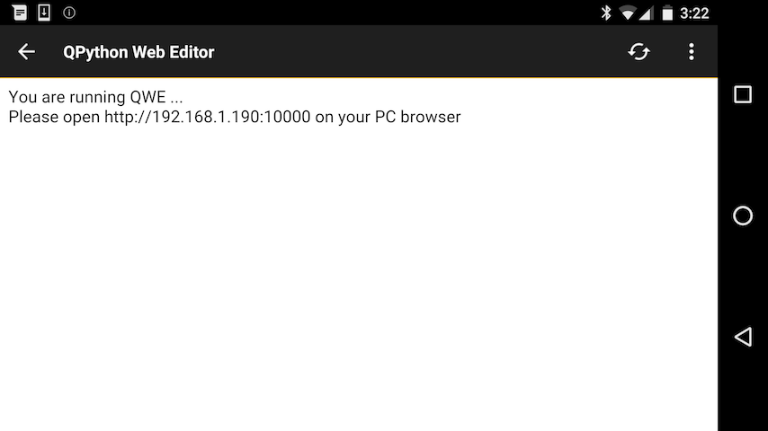
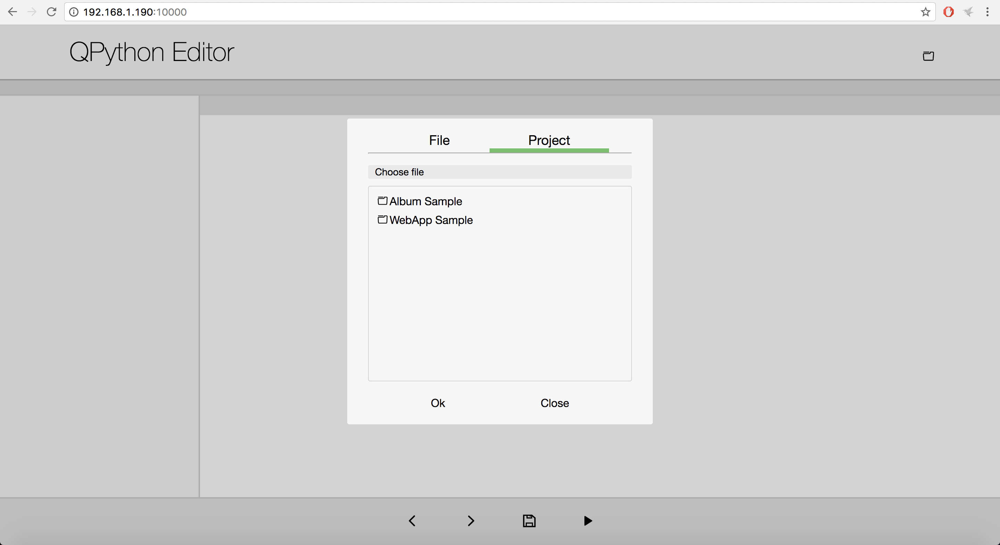
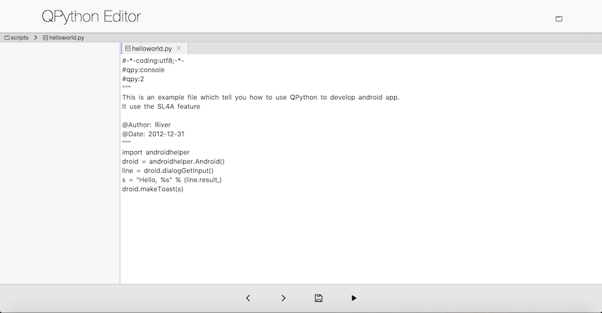

- Guide »
- Getting started »
- Use the best way for developing
Use the best way for developing¶
Develop from QEditor¶
QEditor is the QPython’s built-in editor, which supports Python / HTML syntax highlight.
QEditor’s main features
- Edit / View plain text file, like Python, Lua, HTML, Javascript and so on
- Edit and run Python script & Python syntax highlight
- Edit and run Shell script
- Preview HTML with built-in HTML browser
- Search by keyword, code snippets, code share
You could run the QPython script directly when you develop from QEditor, so when you are moving it’s the most convient way for QPython develop.
Develop from browser¶
QPython has a built-in script which is qedit4web.py, you could see it when you click the start button and choose “Run local script”. After run it, you could see the result.
Then, you could access the url from your PC/Laptop’s browser for developing, just like the below pics.
After choose some project or script, you could start to develop
With it’s help, you could write from browser and run from your android phone. It is very convenient.
Develop from your computer¶
Besides the above ways, you could develop the script with your way, then upload to your phone and run with QPython also.